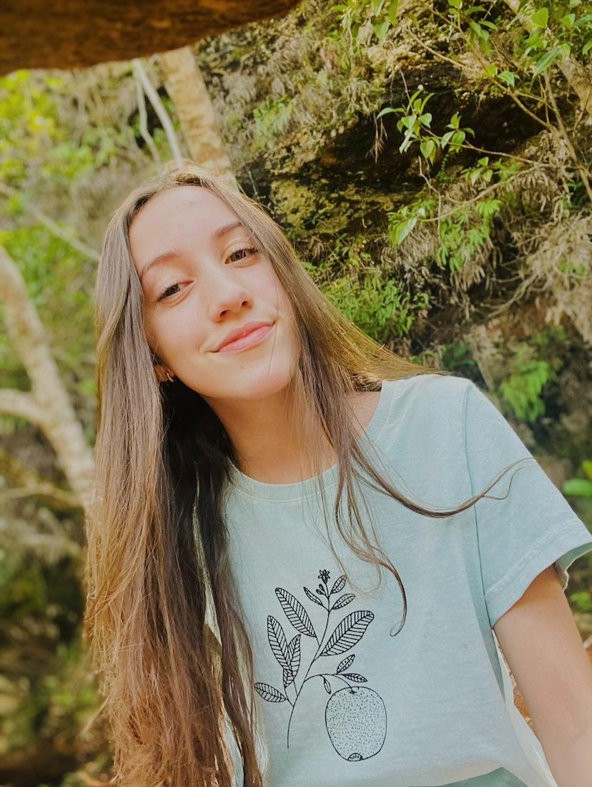

QUEM SOMOS NÓS?
Olá, eu sou a Bruna, estudante de ciência da computação na PUC Minas e desenvolvedora do Salad Days, e quero compartilhar com vocês a jornada que me levou a criar esse site de receitas de saladas.
Confesso que a proposta inicial ao desenvolver essa aplicação web era fazer um blog, entretanto, acredito que a melhor maneira de conhecer alguém é conhecendo mais sobre seus gostos, por isso o Salad Days, criado por alguém que ama saladas e queria compartilhar.
Nosso objetivo não é só compartilhar receitas, mas também incentivar um estilo de vida saudável de forma prática.